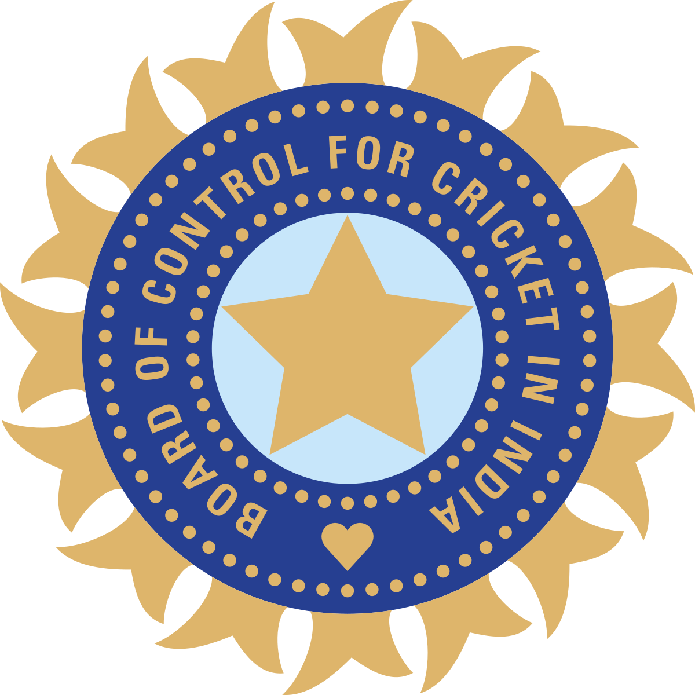

The Indian cricket team, celebrated for its passion and prowess, is a dominant force in international cricket. Representing India in Test, One Day Internationals (ODIs), and Twenty20 (T20) formats, the team has achieved numerous victories, including multiple World Cup titles. Known for its talented players and vibrant fan base, the Indian cricket team exemplifies determination and skill. With a rich cricketing heritage, the team continues to captivate audiences and inspire future generations of cricketers.
Kapil Dev
Kapil Dev, born on January 6, 1959, in Chandigarh, India, is one of the most iconic figures in the history of Indian cricket. Known for his all-round brilliance, Kapil played a pivotal role in transforming Indian cricket, leading the country to its first-ever Cricket World Cup victory and inspiring a generation of cricketers.
Kapil Dev made his debut for the Indian national team in 1978 as a fast bowler with a unique ability to swing the ball both ways. His aggressive style and natural athleticism quickly established him as a key player for India. However, it was his ability with the bat, particularly in crunch situations, that set him apart as one of the game’s greatest all-rounders. Kapil’s fearless approach and his capability to change the course of a match with both bat and ball made him a formidable presence on the field.
The defining moment of Kapil Dev’s career—and indeed a turning point in Indian cricket—came in 1983 when he captained India to its first-ever Cricket World Cup triumph. Leading a team that was not considered one of the favorites, Kapil inspired his players with his indomitable spirit and exceptional performances. His remarkable innings of 175 not out against Zimbabwe in the group stages, rescuing India from a precarious position, is often regarded as one of the greatest innings in World Cup history. Under his leadership, India went on to defeat the mighty West Indies in the final, a victory that changed the face of Indian cricket forever.
Kapil Dev’s impact on cricket in India extended far beyond that historic World Cup win. He became a national hero, symbolizing the emergence of India as a formidable force in international cricket. His success inspired millions of young Indians to take up the sport, leading to a surge in cricket’s popularity across the country. His record as the highest wicket-taker in Test cricket at the time of his retirement, with 434 wickets, along with over 5,000 runs, solidified his status as one of the greatest all-rounders in the history of the game.
Kapil retired from international cricket in 1994, leaving behind a legacy that has had a lasting impact on Indian cricket. He continued to contribute to the sport as a coach, commentator, and mentor, sharing his vast knowledge and experience with the next generation of cricketers. His contributions were recognized with numerous accolades, including the prestigious Padma Bhushan award in 1991.
Kapil Dev’s influence on the rise of cricket in India is immeasurable. He was not just a great player but a pioneer who laid the foundation for India’s future successes on the global stage. His leadership, courage, and commitment to the game have left an indelible mark on Indian cricket, ensuring that his legacy will endure for generations.
Sachin Tendulkar
.png)
Sachin Tendulkar, born on April 24, 1973, in Mumbai, India, is often hailed as the "God of Cricket" and is widely regarded as one of the greatest batsmen in the history of the sport. His extraordinary talent, unmatched consistency, and incredible longevity have made him a global icon, inspiring countless cricketers and fans alike.
Tendulkar's cricketing journey began at a young age when his prodigious talent was first noticed in the cricketing circles of Mumbai. He made his debut for the Indian national team in 1989 at the tender age of 16, immediately drawing attention with his technique and composure against some of the world’s most feared bowlers. Over the next two decades, Tendulkar would go on to redefine the art of batting, setting and breaking records that many thought were unreachable.
One of Tendulkar’s most remarkable qualities was his ability to adapt and evolve his game over the years, enabling him to remain at the top of world cricket for nearly a quarter of a century. His mastery over all formats of the game, combined with his ability to perform under pressure, made him a match-winner and a pillar of the Indian cricket team. Tendulkar’s record of 100 international centuries, including 51 in Test matches and 49 in One Day Internationals (ODIs), stands as a testament to his unparalleled consistency and excellence.
Beyond his personal achievements, Tendulkar played a crucial role in the rise of Indian cricket on the global stage. His performances throughout the 1990s and early 2000s, often carrying the hopes of a billion fans on his shoulders, helped elevate Indian cricket to new heights. Tendulkar was a key figure in India’s 2011 ICC Cricket World Cup victory, which was the crowning glory of his illustrious career. The sight of Tendulkar being lifted by his teammates in celebration after the final was a moment of pure joy for Indian cricket fans, symbolizing his immense contribution to the sport.
Off the field, Tendulkar’s humility, sportsmanship, and dedication to the game have earned him the respect and admiration of people worldwide. His influence extends far beyond the cricket field, as he has been a role model for aspiring cricketers and an ambassador for the sport. Tendulkar’s contributions to cricket were recognized with numerous accolades, including the Bharat Ratna in 2014, making him the first sportsperson to receive India’s highest civilian award.
Sachin Tendulkar retired from international cricket in 2013 after an illustrious career spanning 24 years, but his legacy continues to inspire future generations. His records, his style, and his spirit have left an indelible mark on the game of cricket. For millions of fans around the world, Tendulkar is not just a cricketer but a symbol of excellence, perseverance, and the power of dreams. His name will forever be synonymous with the golden era of Indian cricket, ensuring that his legacy will endure for generations to come.
Mahendra Singh Dhoni
.png)
Mahendra Singh Dhoni, born on July 7, 1981, in Ranchi, India, is one of the most revered figures in the history of Indian cricket. Known for his calm demeanor, sharp leadership, and exceptional skills, Dhoni's career has been marked by remarkable achievements and a profound impact on the sport in India.
Dhoni’s cricketing journey began in the domestic circuit, where his hard-hitting batting and effective wicketkeeping caught the attention of national selectors. He made his international debut in 2004 and quickly established himself as a dynamic player. Dhoni’s rise to prominence was marked by his fearless approach and innovative playing style, particularly in limited-overs cricket.
In 2007, Dhoni was appointed as the captain of the Indian Twenty20 team, and his leadership was instrumental in India winning the inaugural ICC T20 World Cup in South Africa. His ability to remain composed under pressure and make strategic decisions proved to be a game-changer. Dhoni’s success continued as he took on the role of captain for the Indian One Day International (ODI) and Test teams.
Under Dhoni’s captaincy, India achieved significant milestones, including winning the 2011 ICC Cricket World Cup and the 2013 ICC Champions Trophy. The 2011 World Cup victory, in particular, was a historic moment for Indian cricket, and Dhoni’s match-winning knock in the final, where he scored 91 not out, cemented his legacy as one of the game’s great leaders. His calm and calculated approach during high-pressure situations earned him widespread acclaim and affection from fans and players alike.
Dhoni’s leadership style was characterized by his ability to inspire and manage a diverse team, fostering a sense of unity and confidence among his players. His contributions extended beyond the field as he played a crucial role in nurturing young talent and creating a winning culture within the Indian team. His strategic acumen, combined with his unflappable composure, made him one of the most successful captains in the history of the game.
After retiring from Test cricket in 2014 and from ODIs and T20Is in 2019, Dhoni continued to be an influential figure in Indian cricket through his participation in the Indian Premier League (IPL), where he captained the Chennai Super Kings to multiple titles. His involvement in the IPL allowed him to continue showcasing his leadership and mentoring skills, further solidifying his status as a cricketing legend.
Dhoni’s impact on Indian cricket is immeasurable. His leadership, innovative approach, and ability to perform under pressure have left a lasting legacy. Off the field, Dhoni’s humility and dedication to the game have made him a beloved figure, not only in India but around the world. His name is synonymous with modern cricketing excellence, and his contributions have inspired countless cricketers and fans. As a player and a leader, MS Dhoni has ensured that his legacy will be celebrated for generations to come.

.png)